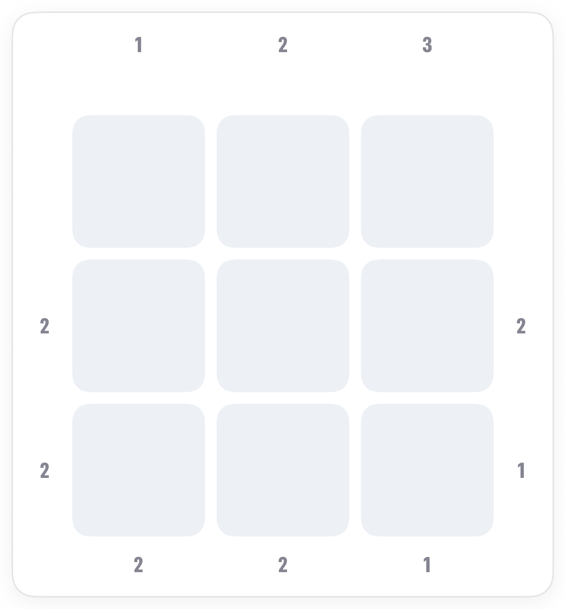
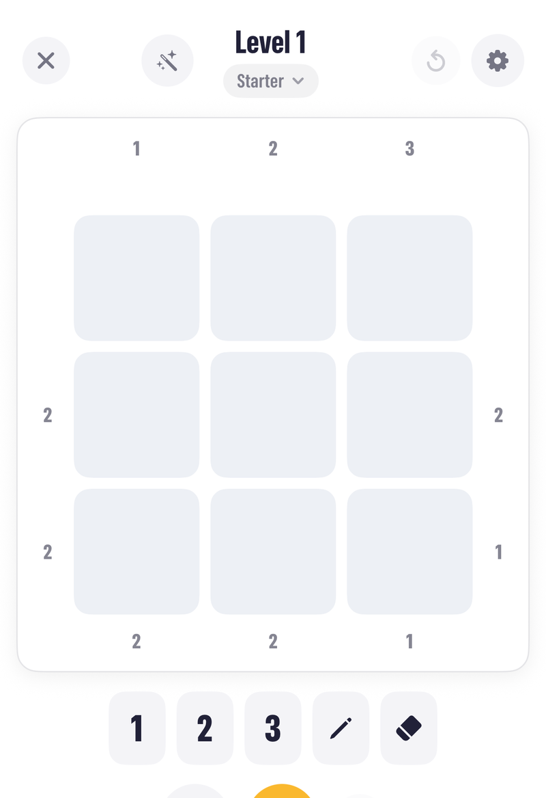
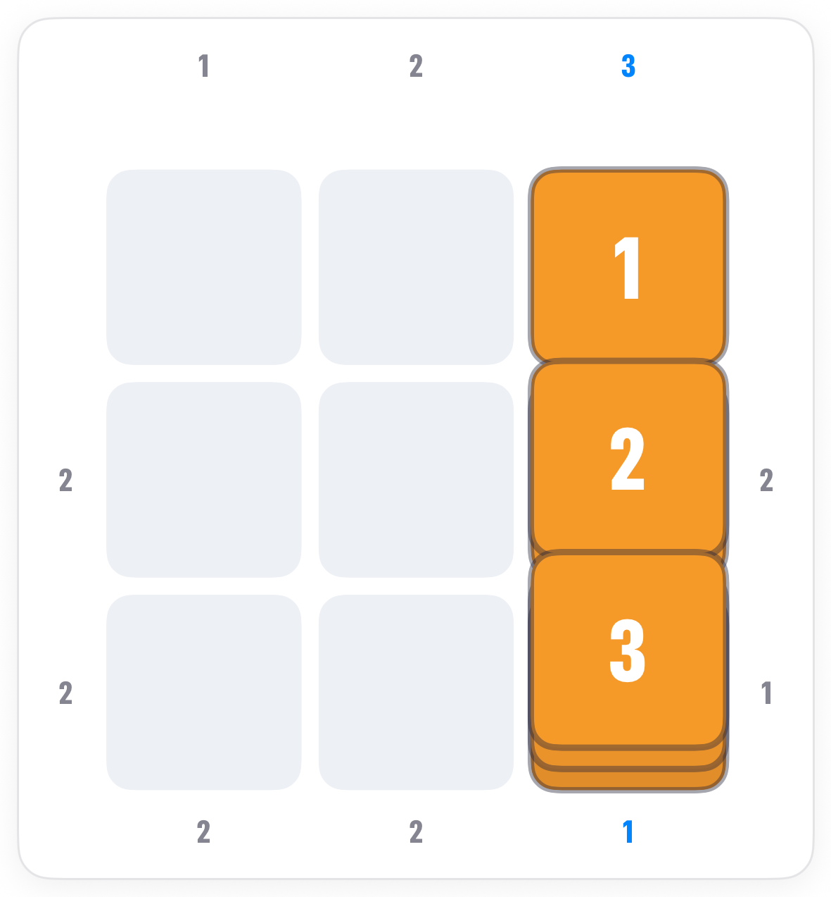
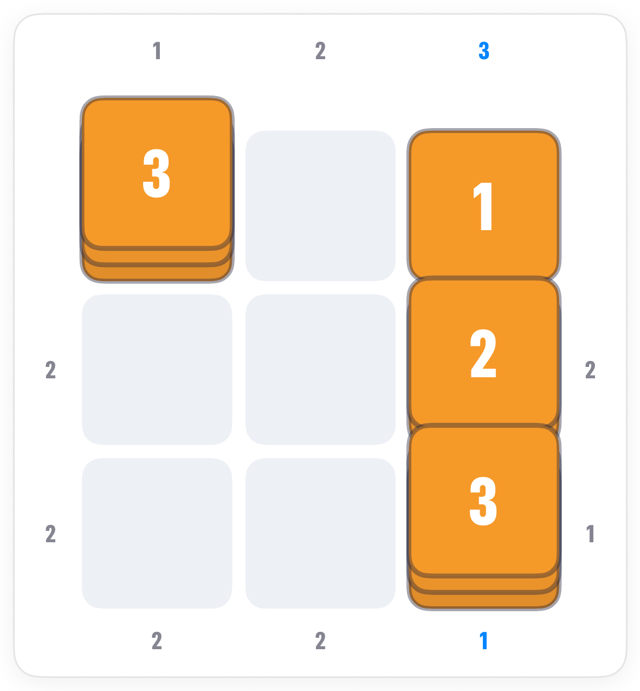
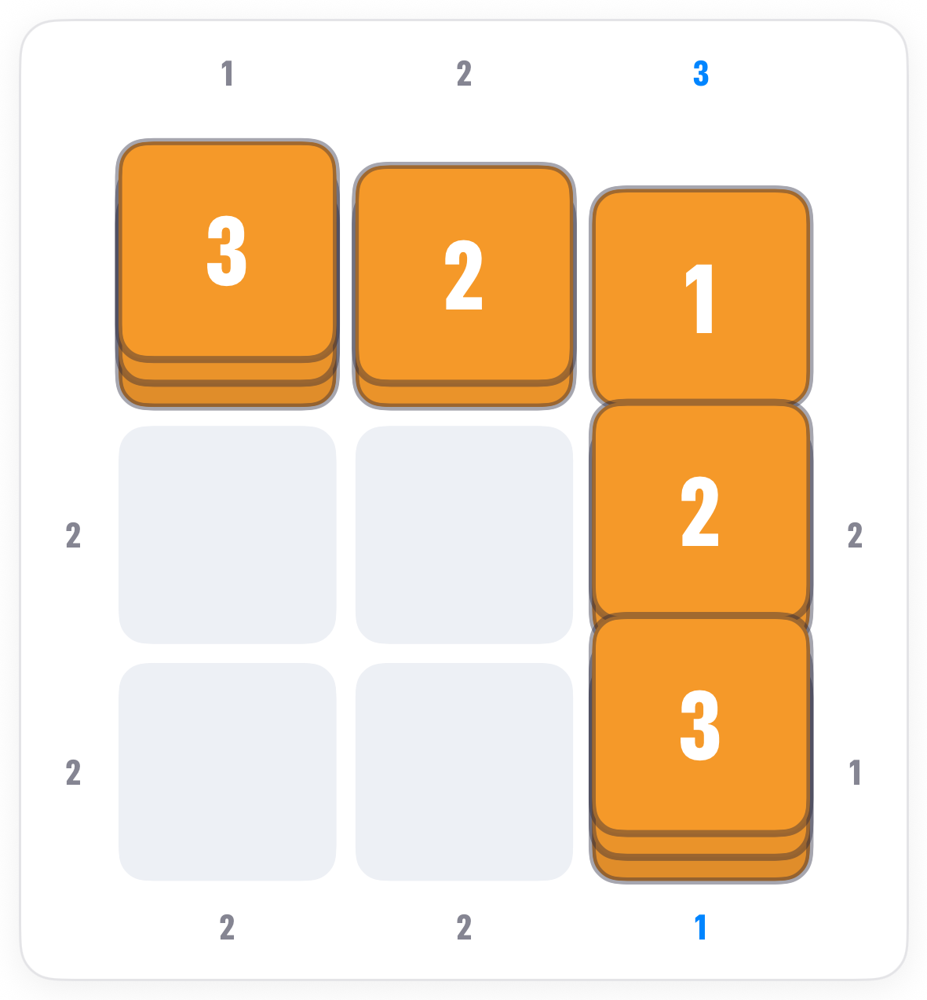
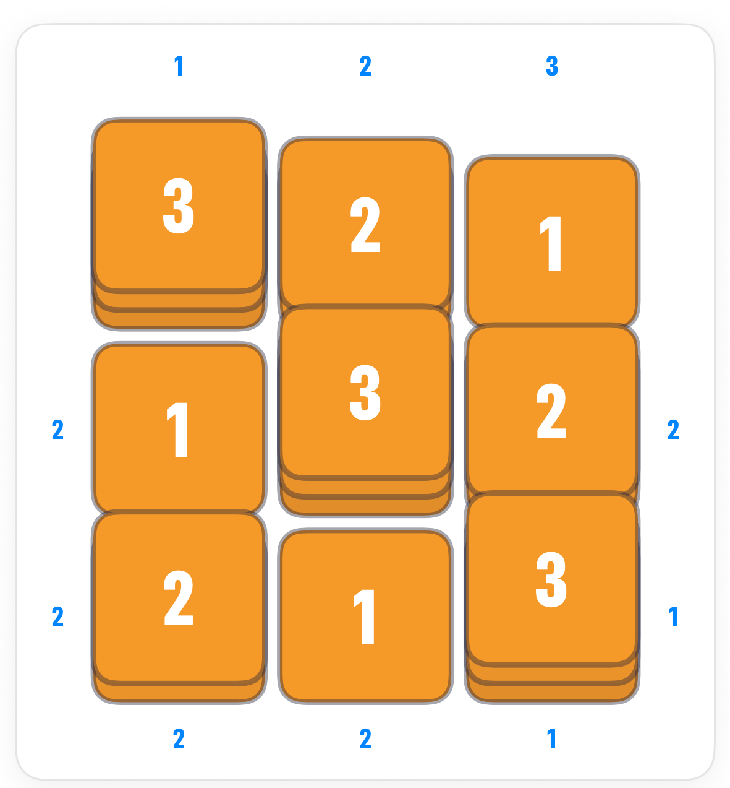

How to play Towers.
Towers is Pocketful's Skyscrapers puzzle. Build a skyline where every row and column has each height once, and the numbers around the edge say how many towers you can see from there.
The board.
A 3 by 3 grid of empty plots with numbers around the outside. Each plot gets a tower of height 1, 2 or 3. On a 3 by 3 board, taller ones hide everything behind them.

The rule.
Tap a plot, then tap a height on the keypad. Tap an edge number and the app sweeps its line of sight so you can see what it sees.

The two instant clues.
A clue equal to the board size means every tower is visible, so they climb in order from that edge: 1, 2, 3. A clue of 1 means the very first tower hides all the others, so it is the tallest.



Finishing.
Check each remaining clue as you go: tap it and watch the sweep. When every clue sees the right number and every line has 1, 2 and 3, the board is done.

Common questions.
What does a blank edge mean?
No clue there. You get no information from that side, and that is fine; the other clues and the once-per-line rule carry it.
Does a taller tower far away still count?
Only if nothing in front of it is at least as tall. Looking in from an edge, you count a tower each time you see one taller than everything before it.